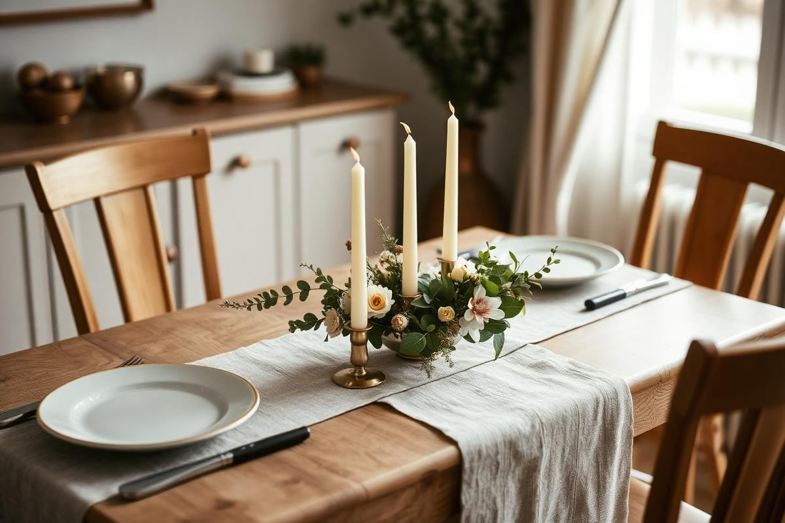
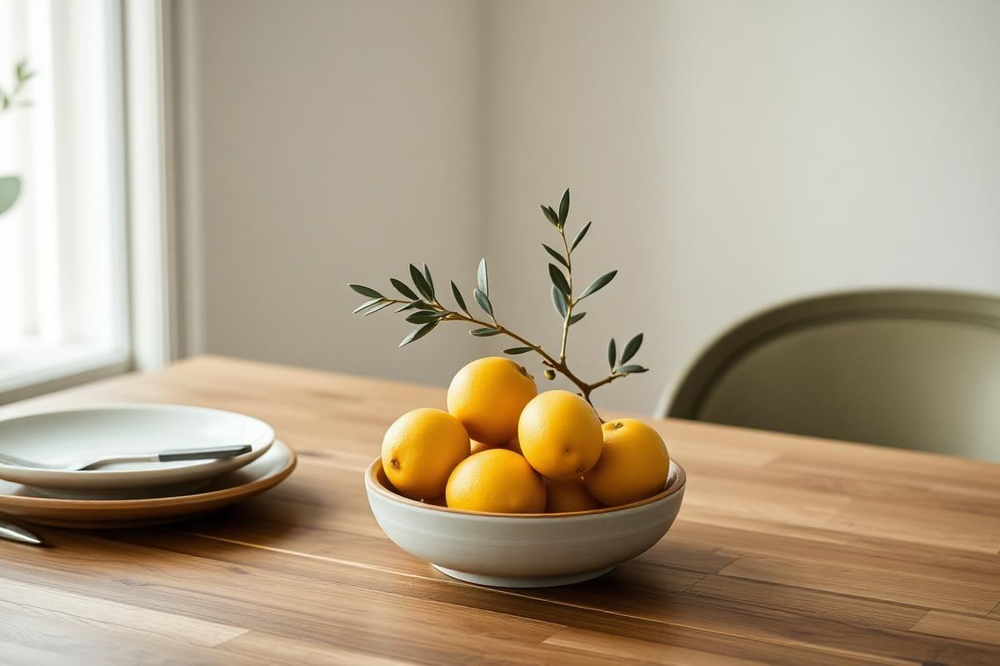

How to Style a Dining Table for Every Day and for Guests

Dining tables get styled for photographs and then dismantled for dinner. That is the fundamental problem with most table styling advice: it assumes an empty table with nothing on it but decoration. In a real house the table is also a desk, a homework surface, and where the post lands. The way to solve it is to design two schemes — a permanent everyday arrangement that is genuinely easy to move, and a layered guest setting you can build on top of it in ten minutes.
Style for two modes, not one
The everyday mode is one object, centrally placed, that can be lifted with one hand. The guest mode adds a runner, place settings, candles, and a second layer of greenery. Because the base object stays the same, you never have to start from an empty table, and that is what makes the guest version take minutes rather than an afternoon.
The everyday centrepiece
One low bowl is the most useful thing you can put on a dining table. Fill it with lemons, apples, or walnuts in their shells and it looks considered without any maintenance. A shallow ceramic bowl around 10 to 12 inches across, in a colour that relates to the room, will carry a table on its own for months.

- One object, under 6 inches tall, that lifts in one hand.
- Seasonal fruit reads better than artificial arrangements and costs less.
- A small vase of two or three stems beside it if the table is over 60 inches long.
- Nothing that needs watering daily — the table is the worst place for a fussy plant.
Runners, cloths, and bare wood
A runner should overhang each end by 6 to 12 inches, or stop flush at the table edge — the awkward middle ground where it hangs by two inches looks unresolved. On a good timber table, bare wood with placemats is often stronger than any cloth, because the grain is doing the work a textile would otherwise have to do.
Use a full tablecloth when the table itself is not attractive, when you want to soften a hard-surfaced room acoustically, or for a formal occasion. Linen creases and that is the point; ironing a linen cloth to a sharp finish removes the quality you paid for.
The 12-inch height rule
Anything in the centre of a dining table must be under 12 inches tall or over 24 inches tall — nothing in between. Below 12 inches, people can see each other over it. Above 24 inches, they can see under it. The dead zone between those two heights blocks conversation, which is the one thing a dining table exists for.
Place settings and spacing
Allow 24 inches of table width per person as a comfortable minimum, and 15 inches of depth for each setting. Placemats should sit about an inch from the table edge; cutlery lines up with the bottom of the mat, forks to the left, knife and spoon to the right, blade facing in. Glasses go above the knife, and side plates to the upper left.
- 24 inches of width per person, 15 inches of depth per setting.
- Placemats an inch in from the edge, cutlery aligned to the mat's bottom edge.
- Napkins folded simply on the plate or to the left — skip elaborate folds.
- Leave a clear 6-inch channel down the centre for serving dishes.
Candles done well
Use unscented candles on a dining table, always. Scent competes directly with food, and a strong fragrance three feet from a plate genuinely changes how the meal tastes. Tapers at 10 to 12 inches in low holders keep the flame above eye level; tealights in small glasses scattered along the centre are the easier, cheaper option and produce lovely light at low level.
Odd numbers look better than even. Three or five candles along a rectangular table reads as a composition; four reads as a grid.
The ten-minute guest setting
Working order: lay the runner, set placemats and cutlery, add glasses, place the candles, then move the everyday bowl to one end of the runner and add a second small vase at the other. Light the candles fifteen minutes before people sit down so the wax has pooled and the flame has settled. That is the entire routine, and it takes ten minutes once you have done it twice.
One detail worth the effort: put something at each place that is not cutlery — a folded napkin with a sprig of rosemary, a small name card, a single olive on the side plate. It signals that the table was set for the people arriving rather than assembled from stock.
Matching the scheme to table shape
- Round tables: one central grouping only. Runners rarely work; use a round cloth or bare wood.
- Rectangular: a runner plus three groupings along the centre line.
- Square: one central object, four settings, and no runner.
- Extending tables: style the closed footprint so you are not restyling every time you add the leaf.
Sit down at the table when you have finished. Standing over it, everything looks fine; seated, you will immediately notice that the vase blocks the person opposite or the candle is at eye level. That check takes ten seconds and it is the one most people skip.
Key takeaways
- Design two schemes: an everyday object and a layered guest setting.
- Keep centrepieces under 12 inches so people can see across the table.
- Allow 24 inches of width per place setting.
- Use unscented candles in odd numbers.
- Check the arrangement while seated, not standing.
Frequently asked questions
What should I put on my dining table every day?
One low object under 6 inches tall that you can lift with one hand — a shallow bowl of seasonal fruit is the most practical choice.
How tall should a dining table centrepiece be?
Under 12 inches or above 24 inches. Anything between those heights blocks eye contact across the table.
How much space does each place setting need?
About 24 inches of table width per person and 15 inches of depth for the setting itself.
Should a table runner hang over the edge?
Either overhang by 6 to 12 inches at each end or stop flush at the edge. A two-inch overhang looks unresolved.
Can I use scented candles on a dining table?
No — scent competes with food. Use unscented tapers or tealights and keep any fragrance in another room.

Sophia Bennett is a certified interior stylist and the senior editor at Styleire. She has spent more than eight years helping homeowners and renters create warm, functional interiors, with hands-on experience across small city apartments and family homes. Her work has been informed by close collaboration with independent designers, craftspeople, and product testers.
View full profile →Related reading

Dining Room Lighting Guide: Pendants, Height, and Bulbs
A great dining room comes down to one fixture, hung correctly, with the right bulb.

Thanksgiving Table Setting: A Foolproof Formula
Thanksgiving Table Setting: A Foolproof Formula — a clear, editor-tested guide covering the essentials without the filler.

Kitchen Lighting Ideas: A Practical Layering Guide
Most kitchens have one bright ceiling light and a lot of shadow. Here is the three-layer approach, with the heights and lumen numbers that make it work.